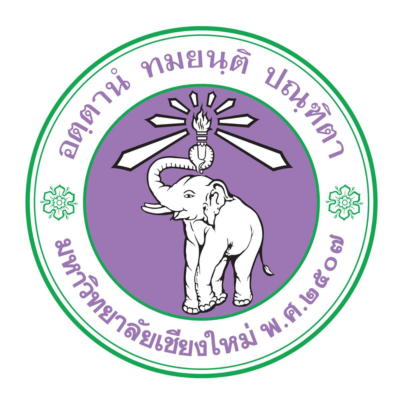
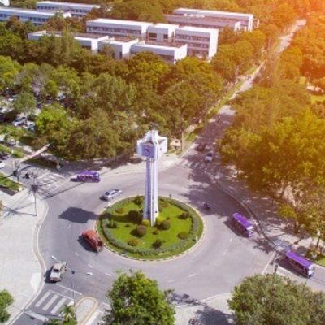
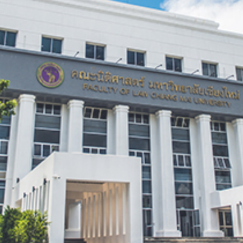

Chiang Mai University



Chiang Mai University, established in 1964 in Chiang Mai Province, is the first university in northern Thailand and a leading institution for higher education in the region. Known for its strong academic programs in science, engineering, medicine, agriculture, social sciences, and the arts, CMU combines academic excellence with research innovation and community engagement. The university emphasizes sustainable development, cultural preservation, and leadership development, preparing students to contribute meaningfully to both regional and national progress while fostering international collaboration.